When I first came to this school, I thought this school was very small.However, there have much more students than I thought. Teachers and students are friendly and kind. This comfort my anxious feelings a lot. Besides the school, there have beautiful environment and views, which brought me a good impression.
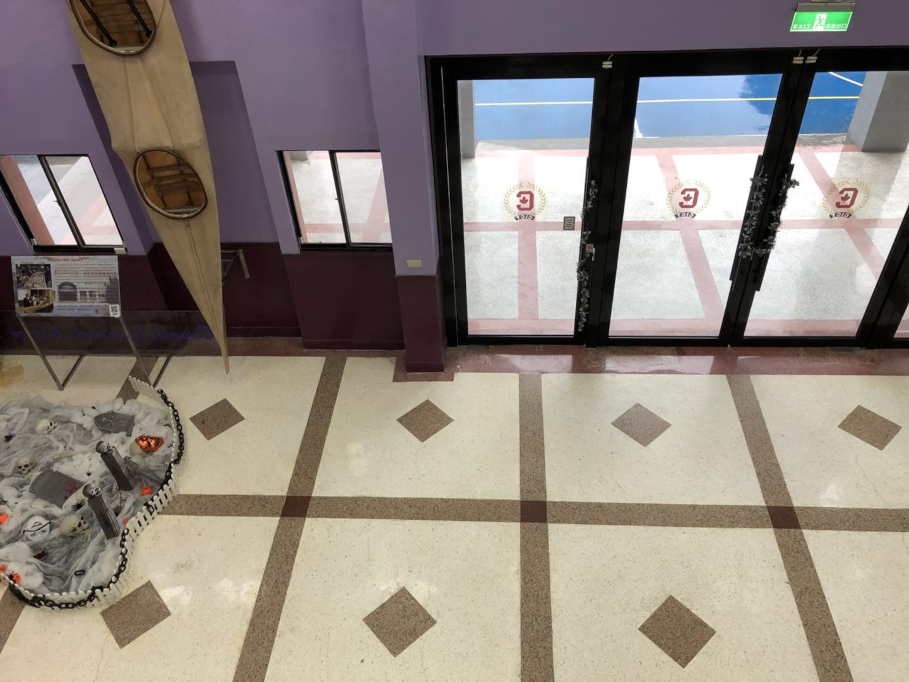 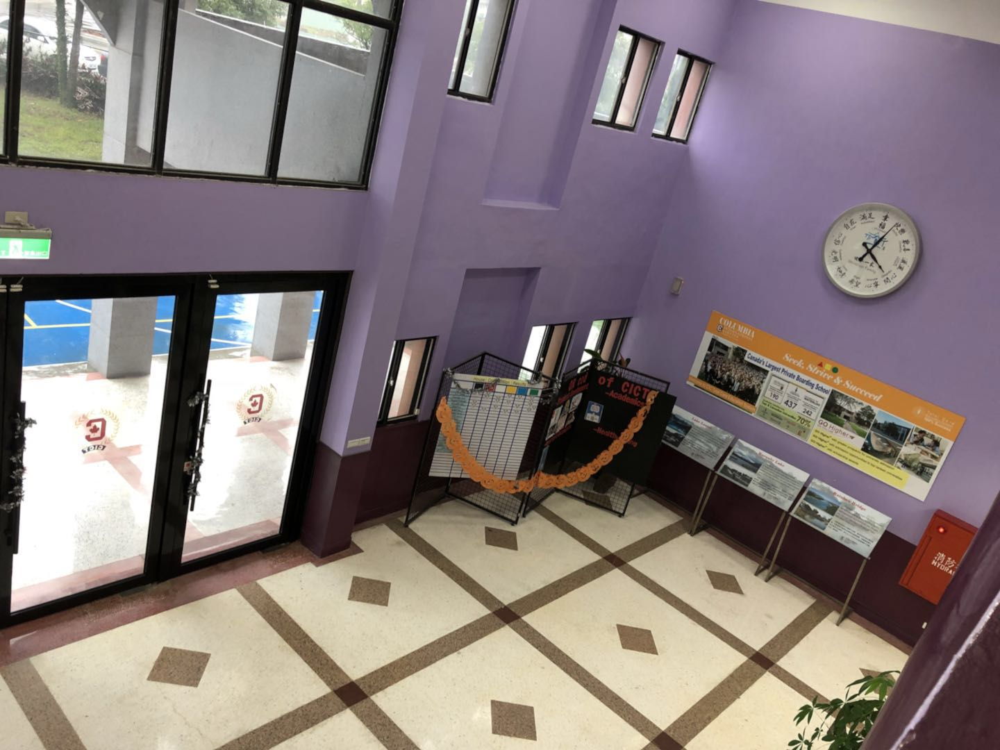After moved to this school, there have many problems happened. For example: I cannot adapt the dorm life quickly, hard to get used to staying in school every day, unfamiliar with classmates.etc.
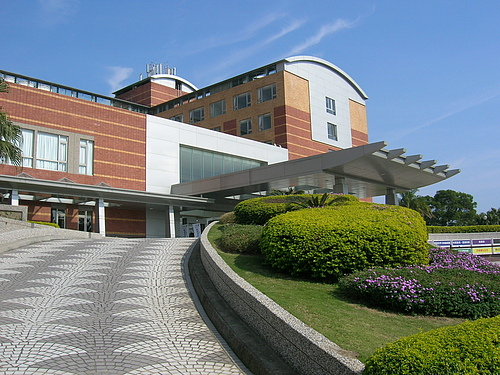My expectation for studying in CICT is to study hard, get along with each other well, take every day seriously and cherish the time in here.
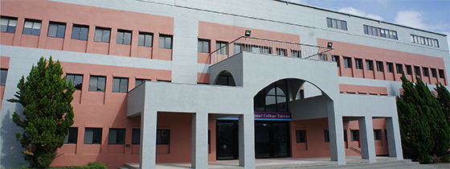After I move into the dorm, I met my new roommate. Even though we were not familiar with each other very well, with only a few communications. However, as time passes, we become a close friend and tell one another everything. Because of my friends, I gradually become no longer afraid and lonely anymore.
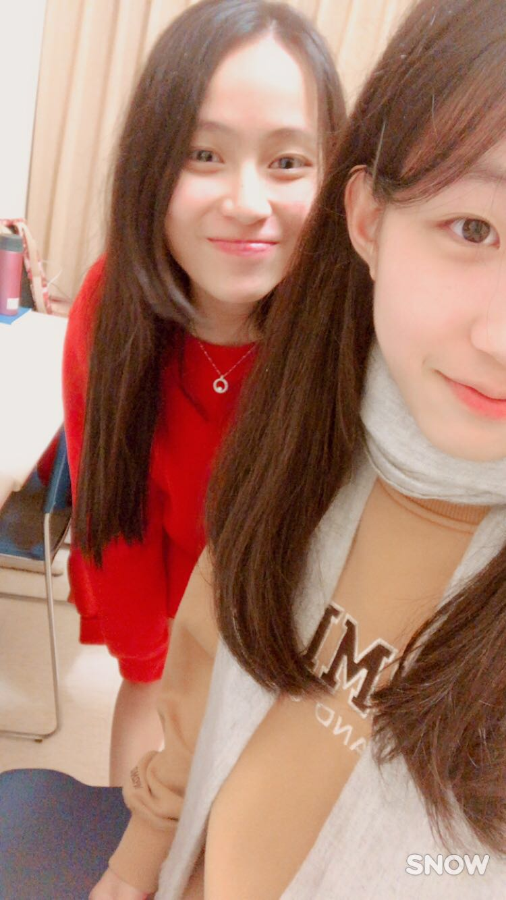Everyday morning, we prepare ourselves and get on the bus on time. After arrived at school and ate breakfast, we start our first class. After all of the classes finished is our club time. We have a lot of fun and also learn a lot of knowledge outside of our lessons.
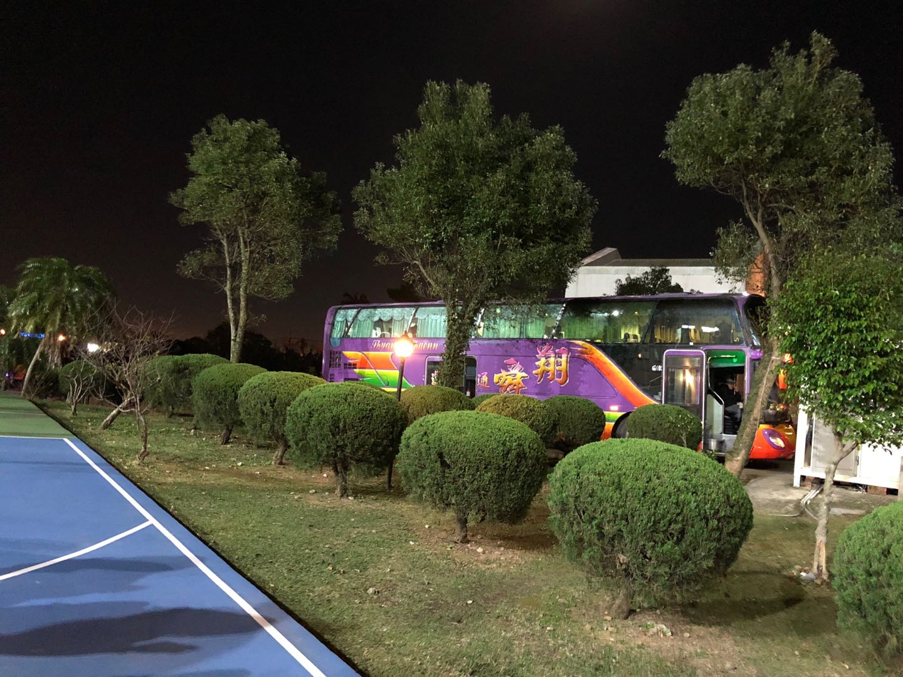The school always prepare good meals for us. In the morning, there will have many different kinds of breakfast for you to choose. For example: traditional Taiwanese breakfast, cereal, toast, and fruit etc. In a week, there will be a special meal for one day, especially on Wednesday or Friday.
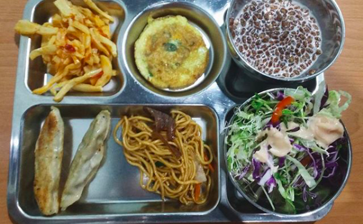At 3 o'clock, it's our club time. The club I chose is the magic club and coffee club. In the magic club, we will get the props and learn three to four magic tricks. In the coffee club, we will learn to make a type of drink. Not only the coffee but also tea drink.
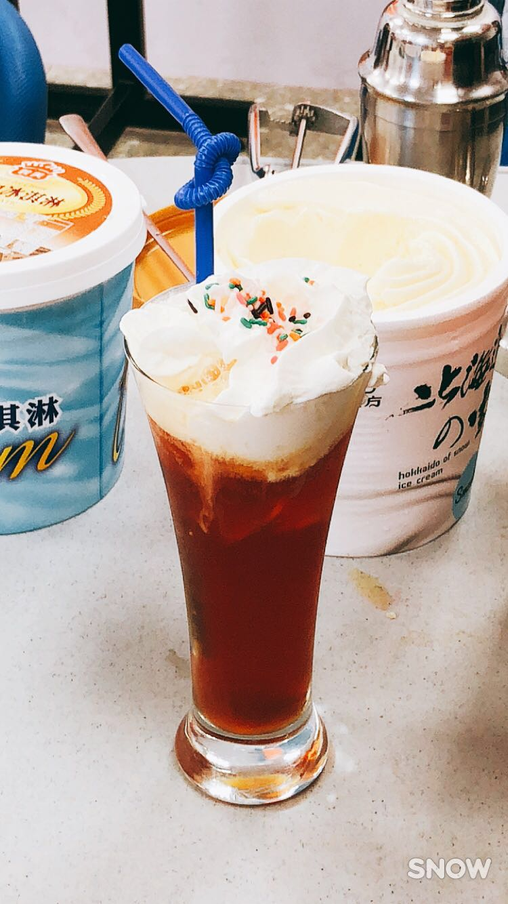After a long week, I will spend my time with my family. Sometimes we will go shopping together, and sometimes we will have a great dinner. Especially after those five days, I will become more cherish the days with my family. These are the only time I can stay with my parents.
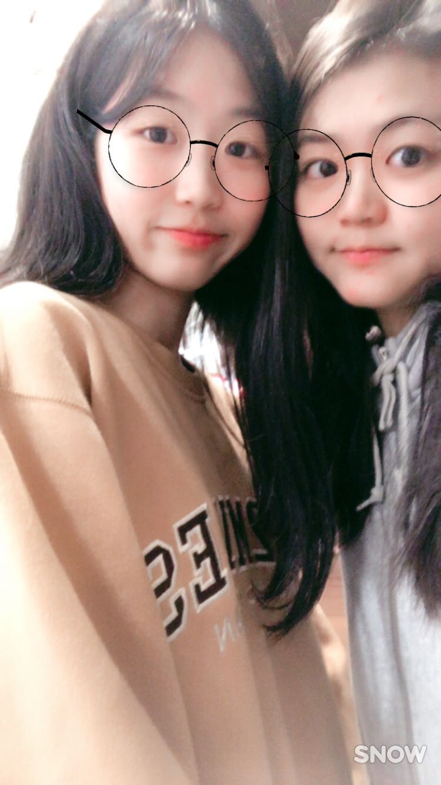In CICT, I put a lot of effort on my study. This is the base for my future. Even though sometimes it drives me crazy, however, you have to awake by yourself, which mean you have to know the importance of study hard.
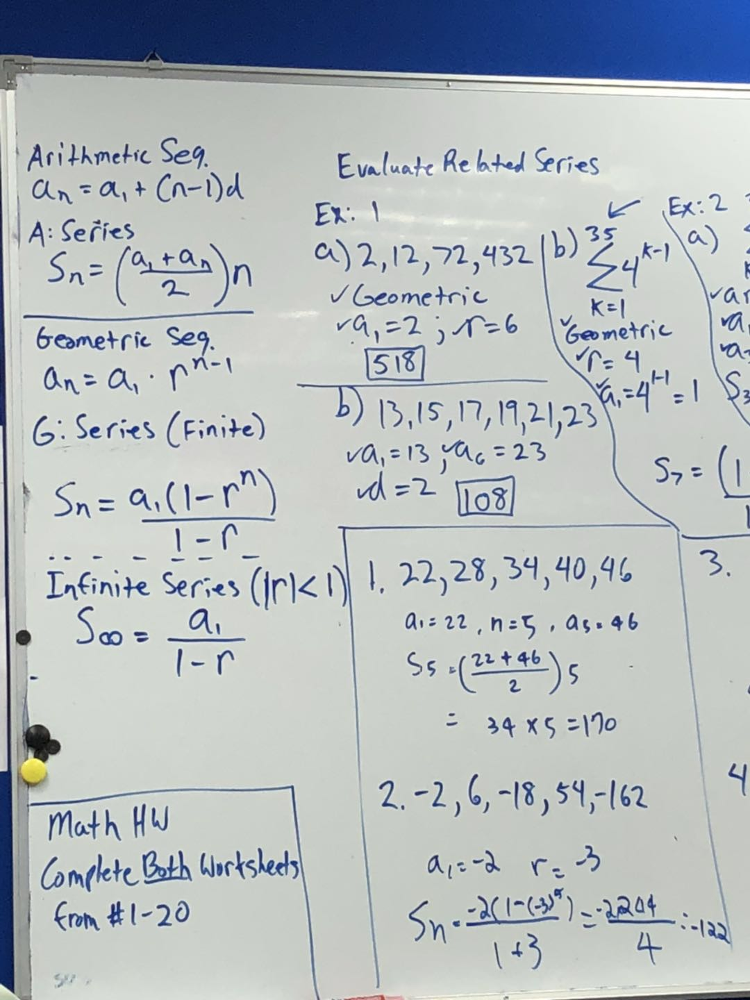 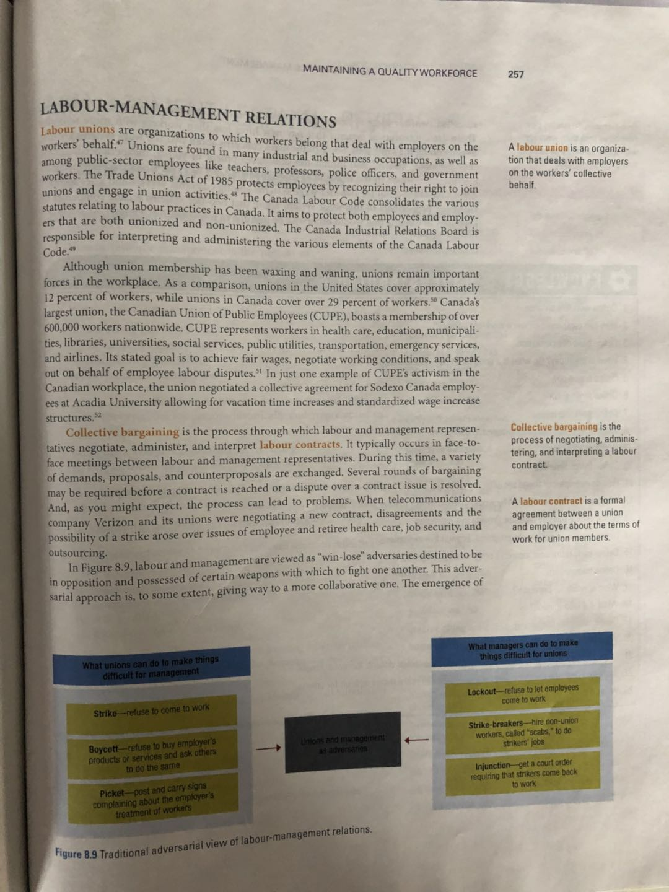I made a lot of friends in CICT. They are kind and very nice people, which made my school day interesting and full of fun. I'm so glad to meet them in my life, and I will cherish the time that we spend together
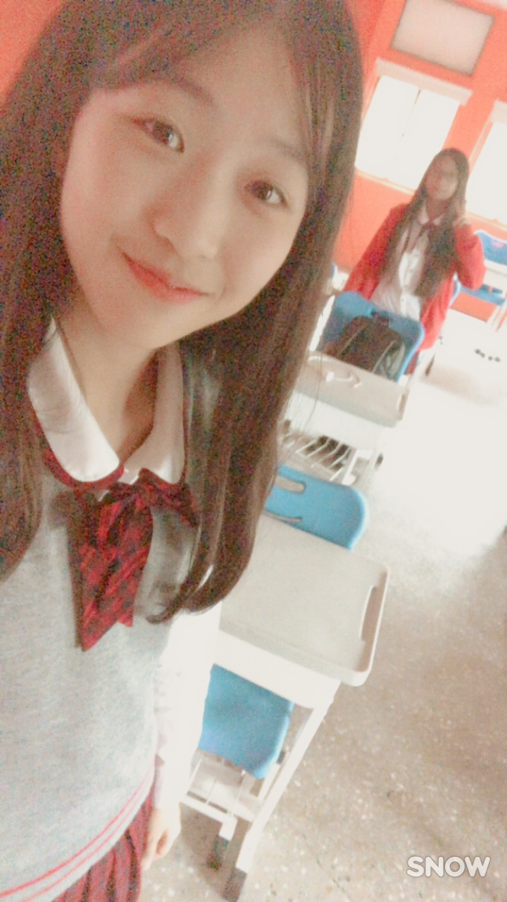 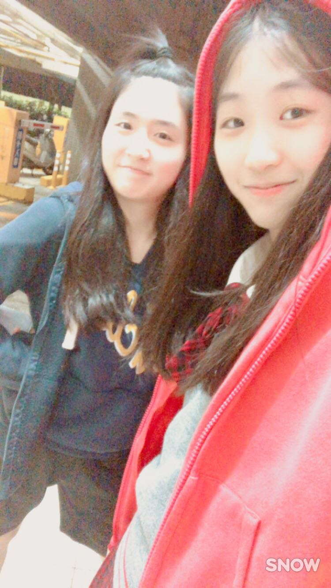 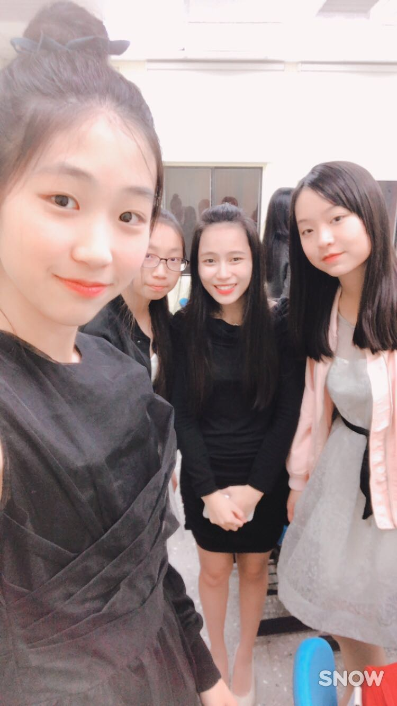 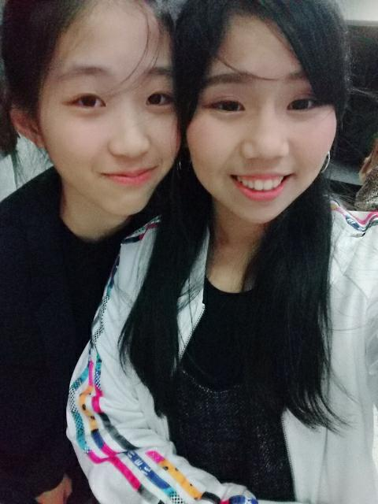 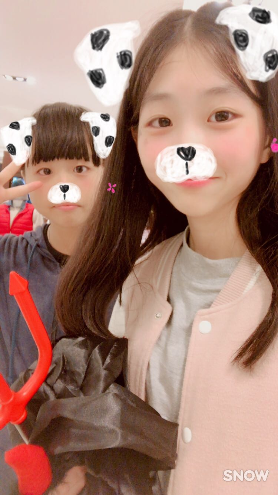